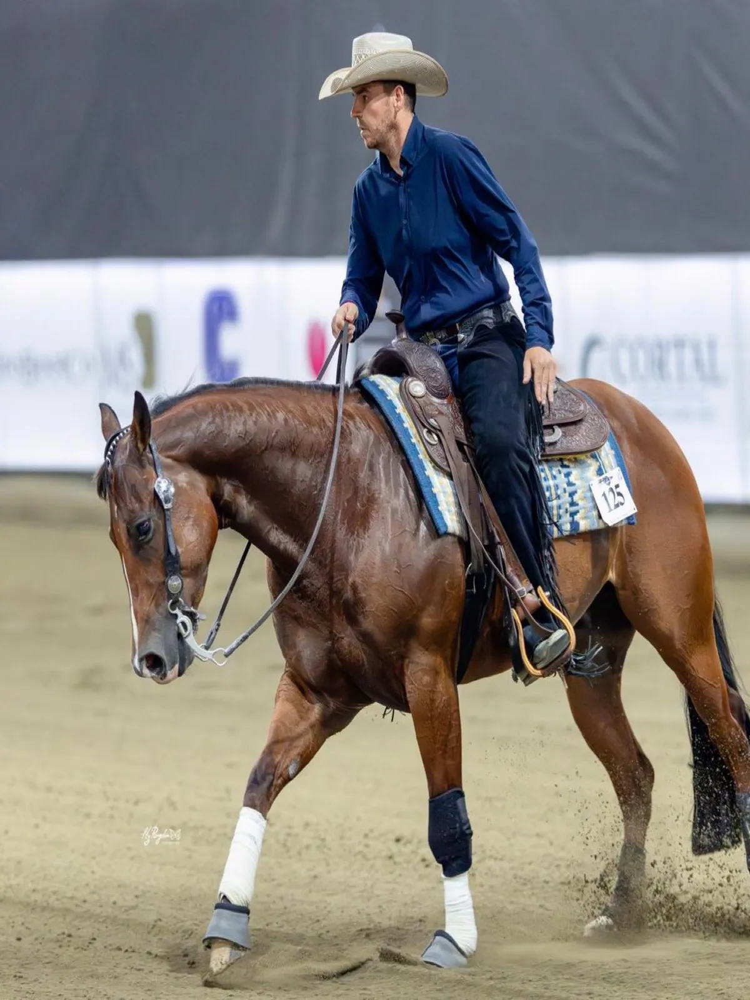
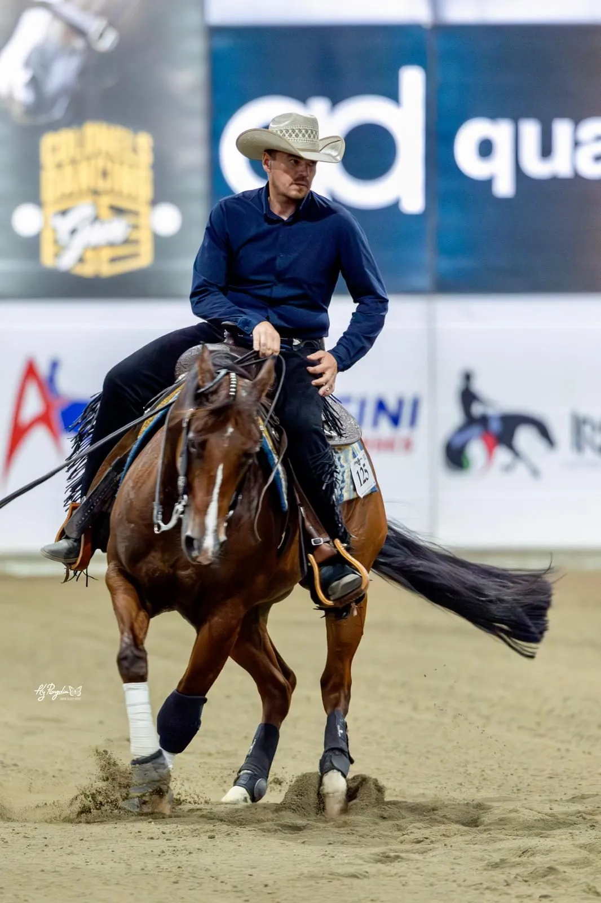
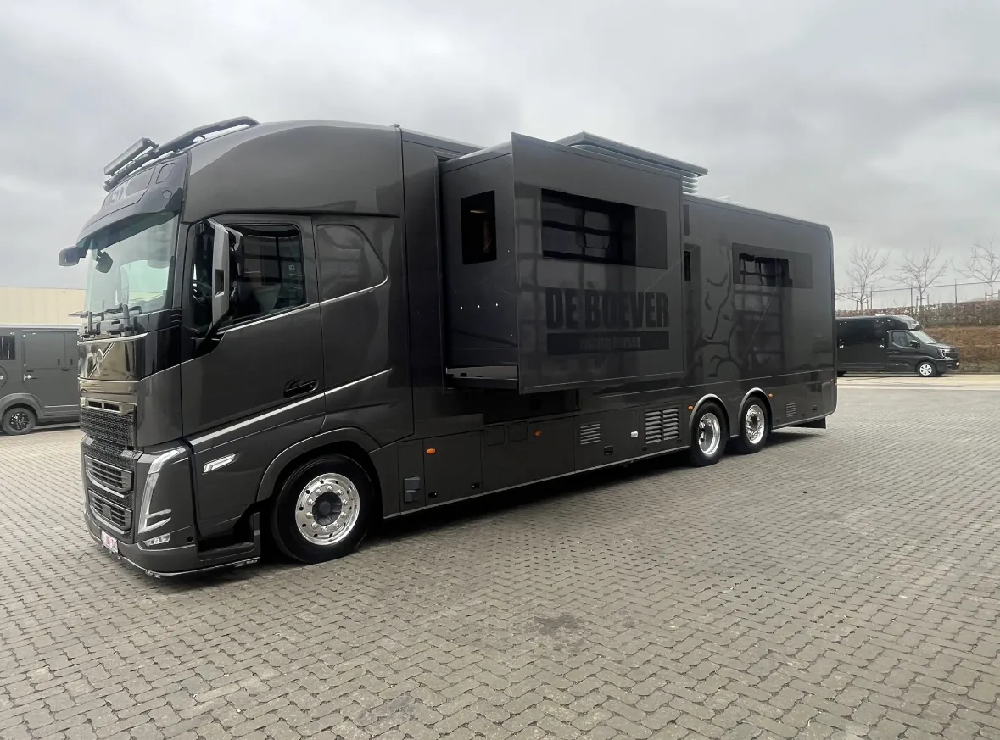
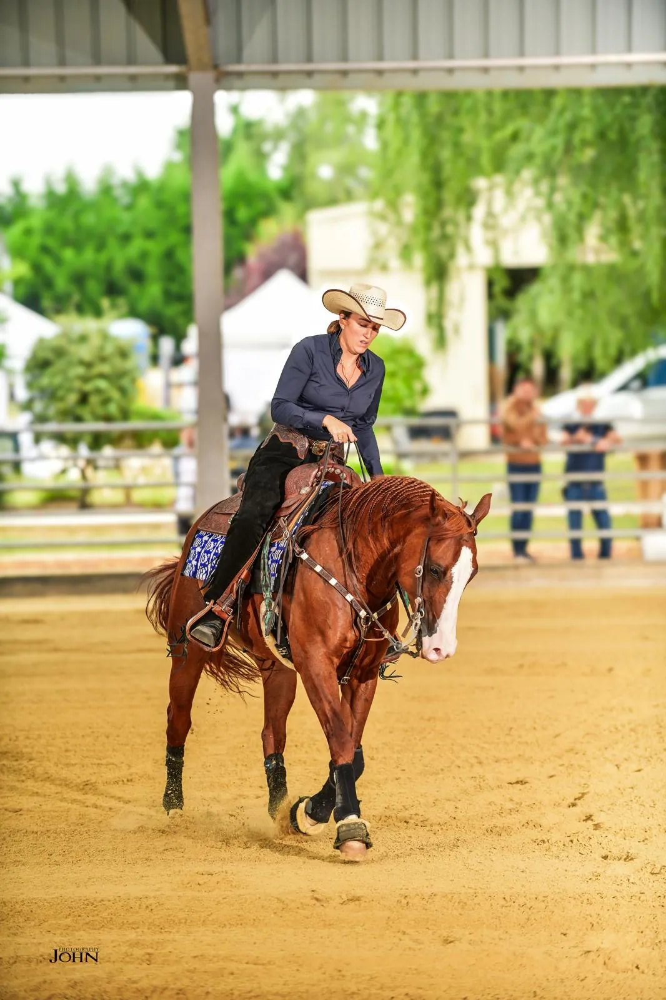
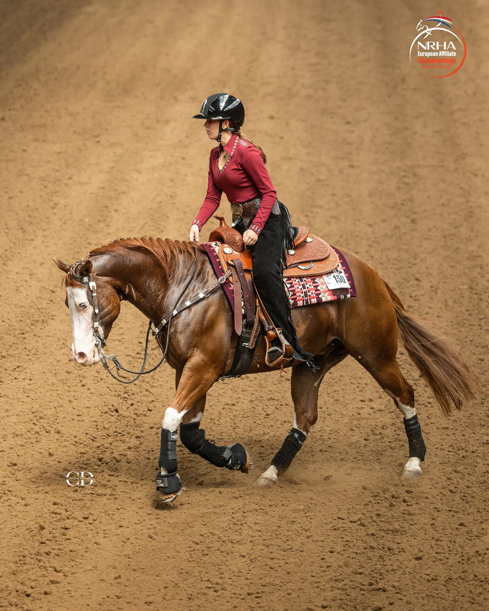
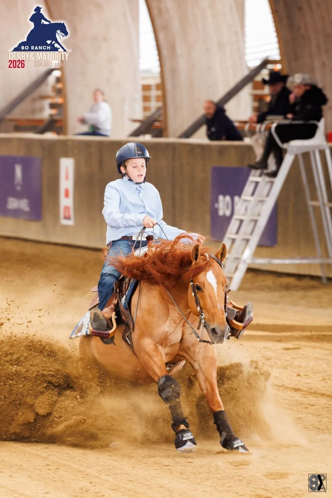
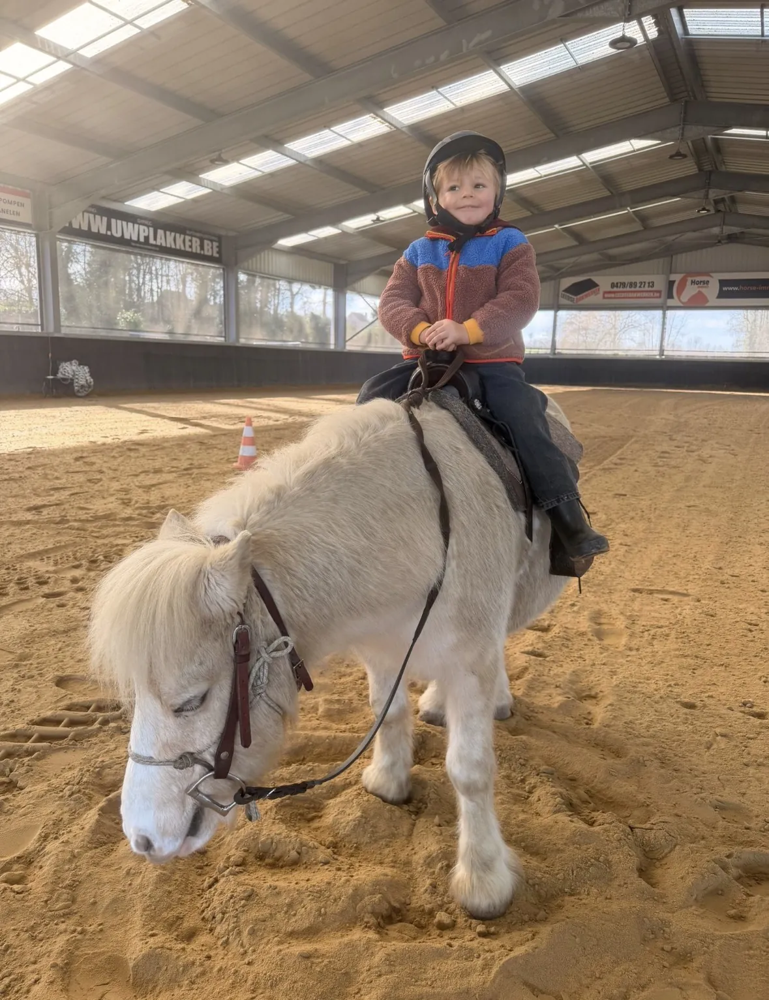

Tom
Non Pro · reining sinds 2017
De drijvende kracht achter De Boever Reining Horses. Zijn passie voor reining vormde het begin van een verhaal dat inmiddels door de hele familie wordt gedeeld.
Onze kleinschaligheid en gezelligheid zijn onze troef.

Wat in 2017 begon als een passie van Tom De Boever, groeide uit tot een verhaal dat de hele familie verbindt. Lynn volgde in 2020, dochter Lotte (16) in 2021 en zoon Viktor (12) in 2024. Ook de jongste telg, Léon (4), kreeg de paardenmicrobe al vroeg te pakken en zette op driejarige leeftijd zijn eerste stapjes met zijn eigen pony.
Bij familie De Boever zijn paarden veel meer dan een hobby. Ze maken deel uit van het dagelijkse leven. Van trainingen op stal tot wedstrijden in binnen- en buitenland: reining beleven ze samen.
Elkaars grootste supporters, verbonden door dezelfde passie.
Want bij De Boever Reining Horses draait het niet alleen om paarden en prestaties, maar vooral om familie, samen genieten en herinneringen maken.


De drijvende kracht achter De Boever Reining Horses. Zijn passie voor reining vormde het begin van een verhaal dat inmiddels door de hele familie wordt gedeeld.

Sinds 2020 deelt Lynn de passie voor reining. Voor haar draait de sport niet alleen om prestaties, maar ook om het samen beleven van bijzondere momenten. Daarnaast verzorgt ze de sociale media van De Boever Reining Horses en zorgt ze ervoor dat het zowel de paarden als de ruiters aan niets ontbreekt.

Lotte vond in 2021 haar weg naar de reiningsport en is inmiddels actief op verschillende niveaus in de Non Pro. Een jonge amazone met een grote passie voor paarden. Daarnaast neemt ze met veel liefde en toewijding de verzorging van de paarden op zich. Hun welzijn en verzorging liggen haar nauw aan het hart.

Viktor stapte in 2024 mee in de wereld van reining. Als Rookie bouwt hij verder aan zijn ervaring en geniet hij volop van de sport.

De jongste telg van de familie en nu al een echte paardenliefhebber! Met zijn eigen pony Turbo zette hij op driejarige leeftijd zijn eerste stapjes in het zadel. Of hij nu op stal rondloopt, zijn pony vertroetelt of meegaat naar wedstrijden, Léon is er maar al te graag bij. Klein van stuk, maar met een minstens even grote passie voor paarden als de rest van de familie!
Ernst maakt sinds 2019 deel uit van ons team en is een vertrouwd gezicht voor onze familie. Vanaf hun allereerste reiningles begeleidt hij onze kinderen met geduld, passie en deskundigheid. Hij heeft hen zien groeien en gevormd tot de ruiters die ze vandaag zijn. Met zijn ervaring en persoonlijke aanpak is Ernst iemand op wie we altijd kunnen rekenen.
Rian is onze vaste hoefsmid en een onmisbare hulp op stal. Met zijn vakkennis en oog voor detail zorgt hij ervoor dat de hoeven van onze paarden in topconditie blijven en elk paard de juiste ijzers krijgt, afgestemd op zijn individuele behoeften. Dankzij zijn inzet en betrokkenheid draagt Rian elke dag bij aan het welzijn, het comfort en de prestaties van onze paarden.
Een stal bezoeken, een les boeken of gewoon een vraag? Bel of mail ons, we maken graag tijd.